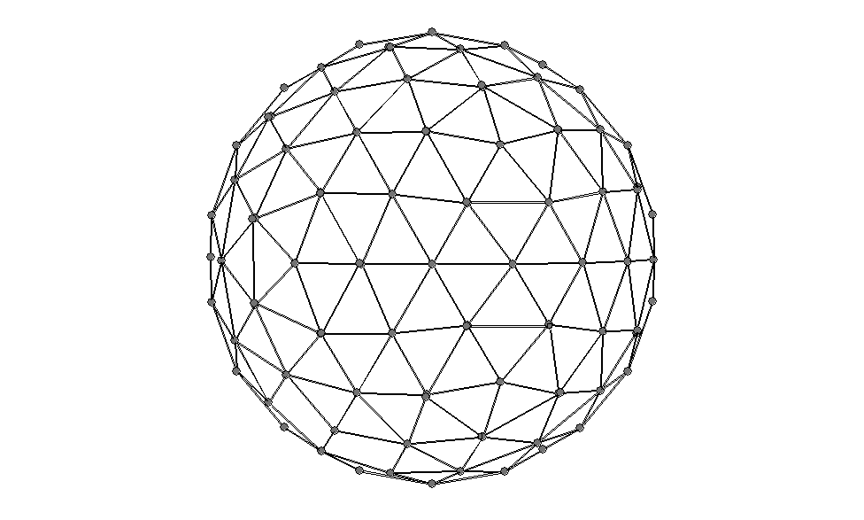

Used for the COSMO method (see EPS) to set the number of geometrical segments per atom to n. This keyword should seldom be used, as the default value (42) should be adequate. However, for high-precision work a larger value from the set 3i x j2 x 10 + 2 should be used (e.g., 92,122, or 162). See also DVFILL
Examples of NSPA
In these examples, the surface of a single atom is outlined in terms of geometric segments. All segments are triangles, although some lines indicating edges in the following diagrams are missing.
NSPA=42
.
NSPA=92
.
NSPA=122
.